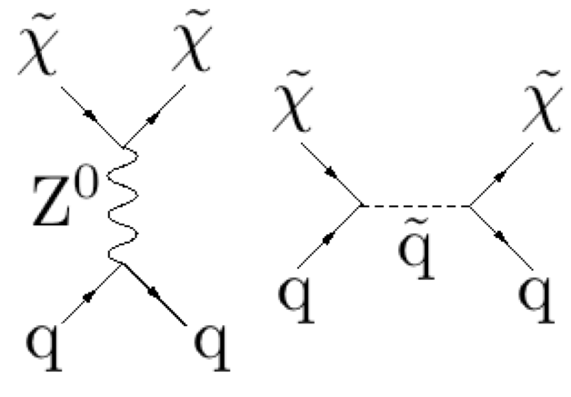
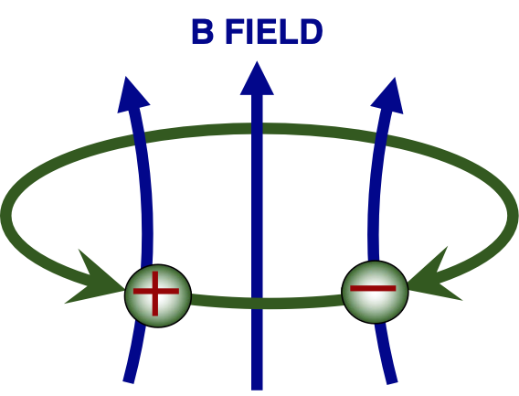
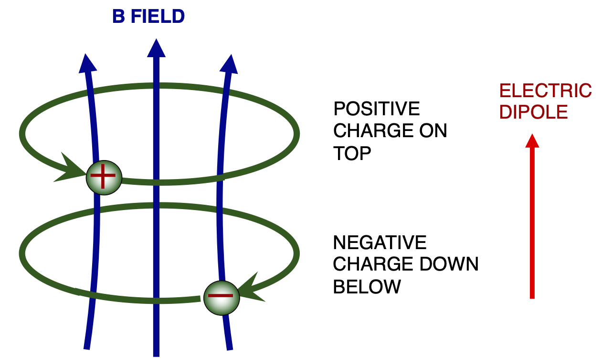

Lecture 1 - Varieties of dark matter and suitable detectors#
WIMPs and Axions#
In these lectures we will discuss detector technologies used in direct searches for two varieties of dark matter candidates, WIMPs and axions. We will introduce WIMPs and axions today. We will cover WIMPs in the subseqent \(3\frac{1}{2}\) lectures and axions in the subsequent \(3\frac{1}{2}\). First, let us summarise the origins and basic properties of these two classes of candidates.
WIMPs#
WIMPs arise in extensions to the standard model of particle physics connected to the electroweak sector. Between the mid 1960s and the mid 1980s, ideas of how to unify the weak nuclear forces with electromagnetism were developed by, amongst others, Sheldon Glashow, Steve Weinberg and Abdus Salam. These ideas led to the prediction of heavy vector gauge bosons, \(W^\pm\) and \(Z^0\), which together with the photon \(\gamma\) are the carriers of the unified electroweak force. This unification comes into effect at energies around and above the rest energies of the \(W\) and \(Z\) bosons. It is possible from quite easy back of the envelope calculations to estimate the masses of the heavy bosons, at around \(\rm 100\,GeV\), and in the mid 1980s they were discovered at the UA1 and UA2 detectors on the super proton synchrotron (SPS) accelerator at CERN. Much later, in 2015, the Higgs boson, which plays a very significant role in electroweak unification, was also discovered, this time at the large hadron collider (LHC), at a mass of \(\rm 125\,GeV\). This completed the confirmation of electroweak unification, a major achievement of high energy particle physics.

The excitement around the discovery of such a rich seam of new physics led theorists and phenomenologists to attack remaining problems with the standard model by proposing further new physics at around the electroweak energy scale of \(\rm 100\,GeV\). For example, in the standard model, the so-called Higgs self energy, the energy of the interactions of a Higgs boson with itself, is calculated to be infinite. These kinds of divergences and infinities plague the quantum field theories used to model the physics of elementary particles and fields. This particular divergence goes away when the Higgs self-energy is calculated in supersymmetric extensions to the standard model, where each of the discovered fermions, particles with half-integer spin quantum number, has a partner boson, and vice versa.
The idea of supersymmetry leads to the hypothesis of many new particles whose masses are naturally high, otherwise they would have been seen in accelerators already. The dark matter problem, which by the 1970s was already being discussed, could be solved if the lightest of these supersymmetric particles was stable for some reason, perhaps because of a new discrete conserved symmetry known as R-parity. The lightest supersymmetric particle (LSP) became a dark matter candidate. It is unable to decay, because it can only decay into other supersymmetric particles, and there are no lighter supersymmetric particles available. In some models, this lightest supersymmetric particle is called the neutralino. The broad idea, that the lightest supersymmetric particle is stable and solves the dark matter problem has become very popular. This is in part because of the naturalness argument.
Naturalness argument#
The naturalness argument has to do with the modelling that has been done to predict the present-day abundance of hypothetical WIMP dark matter. WIMPs are thought to be produced in the early Universe in a freeze-out mechanism, in which at some energy scale the WIMPs decouple due to the expansion of the Universe from the populations of other particles. If the energy scale where this decoupling occurs, remembering that lower energies correspond to later times, is about \(\rm 100\,GeV\), it turns out that the predicted present-day abundance of WIMPs is about right to solve the dark matter problem. This observation, sometimes called the WIMP miracle, drives many investigators to focus on WIMPs as the likely solution to the dark matter problem. However, searches for supersymmetry at the large hadron collider have failed to discover any new electroweak scale physics so far. As these experiments continue to run, the mass of supersymmetric WIMPs is pushed higher and higher, which is eroding the naturalness argument, since heavier WIMPs decouple later and form less of the dark matter.
Non-superymmetric WIMPs#
This is not to say that WIMPs have to be supersymmetric. There are other theoretical ideas that lead to the possibility of a WIMP, and a lot of theoretical and phenomenological work has been done to work out these other possibilities too. There is no space to discuss all these ideas here. However, again, new electroweak physics of any sort is being probed by the large hadron collider, so we may learn in the future exactly which, if any, of these ideas, is correct. We may then also learn the masses of the particles that are discovered, which would in turn make the searches for WIMP dark matter far more focussed. Crucially, discovery of new particles in an accelerator does not prove that those new particles are dark matter in galactic halos and the Universe at large. In addition, it is not easy to discover weakly interacting massive particles in an accelerator. By their very nature they interact weakly, and hence they would only be evident in accelerator data by their absence - through missing energy or momentum. This makes the search for WIMPs in accelerators difficult. There is a similar problem with studying neutrinos in particle beam accelerators, which is one reason why neutrino experiments are often not accelerator-based.
Properties of WIMPs#
The very general nature of the WIMP means that their detailed properties are unknown. However, we guess that whatever their origins, WIMPs should undergo elastic scattering with ordinary matter. Elastic scattering in quantum mechanics means that the incoming particles before the scatter are the same as the outgoing particles after scattering has taken place. Some Feynmann graphs that would connect WIMPs to nucleons, neutrons or protons, by elastic scattering are shown below.

Summary of WIMPs#
In summary, the WIMP hypothesis is that there exists a stable particle arising from some extension to the standard model connected to the electroweak scale of \(\rm 100\,GeV\), which was produced in large numbers in the early Universe, and which forms the dark matter in galactic halos and other large scale structures today. The mass of the WIMP is not known, but within a few orders of magnitude of \(\rm 100\,GeV\) is usually considered a requirement. This is because if the WIMP mass is too far from this scale, it is no longer credible to think of it as part of the electroweak sector of particle physics. WIMP dark matter is still a very popular hypothesis. WIMPs may appear in accelerator experiments, but their discovery in accelerators alone would not prove that they are dark matter. WIMP dark matter may be searched for by inducing WIMPs from our galactic halo to undergo elastic collisions in a detector. This might cause the objects they are colliding with to recoil, and this recoil energy may in the right detector give rise to a detectable signal.
Axions#
The strong CP problem.#
Also in the 1970s, theorists and phenomenologists were working on the physics of the strong interactions. Experimental probes of the properties of nucleons led to measurements of the electric dipole moment of the neutron, because if the neutron has a non-zero electric dipole moment, given that it certainly has a magnetic dipole moment, then the neutron is not symmetric under the discrete symmetry CP.
To see why this is, first consider this toy neutron, made out of two counter-rotating electric charges. Like a real neutron, it has zero overall charge, but it does have a magnetic dipole moment, becuase there is a net circulating electric current. This toy neutron has no net electric dipole moment, as this would require the positive and negative electric charges to be separated on the axis, creating an electric dipole.

Below is another toy neutron, this one possessing both a magnetic and an electric dipole moment.

This toy neutron is CP violating, as illustrated below. Interchanging all the positive and negative charges (charge conjugation) and relecting the neutron in a mirror (parity) results in a particle after the operation that has its electric and magnetic dipoles oriented differently relative to each other than was the case for the original neutron.

This in turn implies that the theories describing strong interactions violate the CP symmetry. Physicists were expecting that this would be so, because the electroweak forces had already been seen to violate the CP symmetry, as is shown by carefully examining the decays of the \(\rm K_L\) and \(\rm K_S\) mesons. The high-energy model of quark interactions, quantum chromodynamics, contains several physically motivated sources of CP violation. In particular, the mass terms in the theory in general violate CP, and in addition tunnelling between discrete states of the QCD vaccuum, known as instanton tunnelling, predicts further CP violation.
It was therefore a surprise when all the measurements of the neutron electric dipole moment turned out to be consistent with zero. Another back-of-the-envelope calculation can be done to show that the discrepancy between the expected sorts of neutron electric dipole moment and what is measured is something around ten orders of magnitude. This is a significant problem with the standard model of particle physics, and is known as the strong CP problem.
The Peccei Quinn mechanism#
In 1978, two theorists working at the Stanford Linear Accelerator Center (SLAC), Robert Peccei and Helen Quinn, proposed a mechanism that could explain the observed conservation of the CP symmetry. This mechanism is named the Peccei Quinn (PQ) mechanism.
We already know that the Universe undergoes phase transitions.
The electroweak (EW) phase transition breaks the previously unified electroweak force into the distinct weak and electormagnetic forces observed at todays energy scales. This phase transition occurs at an energy scale of around \(\rm 100\,GeV\), close to the Higgs, \(\rm W^\pm\) and \(\rm Z^0\) boson masses.
This isn’t the only phase transition that we are aware of. We observe today that quark matter is confined into neutrons, protons and other hadronic particles, which are further confined into nuclei. Presumably this wasn’t always the case. We expect that at high energies quark deconfinement occurs. Experimental evidence for quark deconfinement is difficult to gather, but some such evidence is available from heavy ion collision experiments at Brookhaven and CERN. The theoretical underpinnings of these phenomena involve a symmetry breaking mechanism operating at an energy scale of around \(\rm 100\,MeV\), known as the QCD phase transition.
Peccei and Quinn’s hypothesis is that an additional phase transition occurs at a very high energy in the early Universe. Their model is that this phase transition corresponds to the breaking of a symmetry, named the PQ symmetry after them. This symmetry breaking can be modelled in terms of the vacuum energy density, \(V(\phi)\) in QCD being a potential similar to that plotted below.
# python code for plotting the Peccei Quinn + QCD potential
import numpy as np
import matplotlib.pyplot as plt
npoints=25
boundary=2.2
x=np.linspace(-boundary,boundary,npoints)
y=np.linspace(-boundary,boundary,npoints)
z=np.zeros((npoints,npoints))
# loop over the grid keeping track of the current indices
xcount=0
ycount=0
for xcoord in x:
for ycoord in y:
r=np.sqrt(xcoord*xcoord+ycoord*ycoord)
# make a wine bottle potential using a quartic in r
z[xcount][ycount]=r*r*r*r-9*r*r-1.5*ycoord
ycount+=1
xcount+=1
ycount=0
# surface plot of the wine-bottle potential
X, Y = np.meshgrid(x, y)
fig = plt.figure(figsize=(8, 6))
ax = fig.add_subplot(111, projection='3d')
# draw a semi-transparent uniform mesh (no colormap)
surf = ax.plot_surface(X,Y,z, color='darkgrey', linewidth=0, antialiased=True, alpha=0.6)
ax.set_xlabel('x')
ax.set_ylabel('y')
ax.set_zlabel('V(x,y)')
fig.savefig("figures/PQ_QCD_potential.pdf")
plt.show()
This theory is well beyond the level that you will be able to grasp precisely, but the ideas are very interesting and accessible qualitatively, if not quantitatively. Here \(\phi\) is a complex scalar field, and \(|\phi|=\sqrt{x^2+y^2}\). The idea is that the vacuum state of the theory, that is, the closest thing to nothing going on, resides at a minimum of this potential. You’ll notice that this potential has a couple of features. Firstly, there is a ring of minima that surrounds \(x=y=0\). Secondly, this ring is in fact not circularly-symmetric about the centre. Instead the ring is tilted sideways, so that the lowest point in the potential is at \(x\simeq 2\) and \(y=0\).
Peccei and Quinns idea is that the history of strong interactions in the Universe involved not one but two phase transitions.
The first one, the Peccei Quinn phase transition, occurred at a very high energy, and therefore in the very early Universe, given the symbol \(\rm f_{PQ}\). On the diagram, this energy corresponds to the height of the hill in the middle of the potential. The energy scale \(\rm f_{PQ}\) is not known, but can be limited based on some astrophysical observations. Below this energy scale, the vacuum of the theory is a set of points arranged around the ring of minima of the potential. The tilting of the potential, however, is insignificant, and any point on the ring is as good a vacuum state as any other.
After the Peccei Quinn phase transition, the Universe continued to expand and cool, and eventually reached the lower energy scale \(\rm \Lambda_{QCD}\sim 100\,MeV\). The QCD phase transition then occurred, with quark matter condensing into baryonic states such as protons and neutrons, which then bind together into the nuclei we see today. The energy scale of the QCD phase transition is also a feature of the potential in the figure. A ball rolling around the ring sees a potential that oscillates up and down. The energy scale \(\rm \Lambda_{QCD}\) corresponds to the amplitude of this oscillation.
Once the energy scale in the expanding Universe descends below this value, further symmetry breaking takes place. Things are now low-energy enough that the tilt of the potential affects physics, and the vacuum state is the one at \(x=0\) where \(V(x,y)\) in the figure is at an absolute minimum. Peccei and Quinn’s mechanism is such that this vacuum state conserves the CP symmetry. So, in the late-stage Universe where we live, the condensates of quark matter, neutrons and protons, are CP symmetric, and therefore have zero electric dipole moments.
Axions#
What are axions? Any symmetry breaking process in particle physics gives rise to a new particle state known as a Goldstone boson. In terms of the model described qualitatively above, if you imagine a ball confined to the potential \(V(x,y)\) that I have plotted here, once the ball has lost sufficient energy, it will end up oscillating back and forth about the absolute minimum of \(V(x,y)\) in oscillations about this point moving back and forth up and down the ring of minima. These oscillations correspond to the new particle, the axion, the Goldstone boson of the breaking of the Peccei Quinn symmetry.
Properties of axions#
Axions are in fact similar to \(\pi^0\) mesons. Both particles are pseudo-scalars; a name which means that their spin is zero and they are odd parity, so that when reflected in a mirror their wave functions pick up a minus sign. Having the same quantum numbers, and I am not expecting you to understand why this is, they exhibit mixing. This mixing connects their physical properties. The axion is associated with the PQ symmetry breaking energy scale, \(\rm f_{PQ}\), and the \(\pi^0\) meson is assoicated with the QCD phase transition at energy scale \(\rm f_{QCD}\sim100\,MeV\). The axion mass \(m_a\) and the \(\pi^0\) meson mass are connected such that
Physically, this means that the higher the PQ symmetry breaking energy, and the earlier in the Universe the axions were created, the lighter the axions are.
So, for example, if \(\rm f_{PQ}\simeq 10^{12}\,GeV\), we know that \(\rm m_\pi=135\,MeV\) and \(\rm \Lambda_{QCD}=100\,MeV\), so that the corresponding axion mass is \(m_a\simeq {\rm 13.5\,\mu\,eV}\). These very light axions are characteristic of the very high energies at which the Peccei Quinn phase transition may have taken place.

Notice that not only the mass, but also the all the couplings of the axion, scale as \(1/{\rm f_{PQ}}\). Lighter axions are therefore also more feebly coupled to other fields such as photons. Therefore, in principle, if the axion is sufficiently light, then it becomes impossible to detect, as it has negligible couplings to fields that we can observe.
On the other hand, as for WIMPs, we can study how axions are produced in the early Universe. The simplest mechanism for axion production is called misalignment production. The consequence of misalignment production is that if the Peccei Quinn symmetry is at higher energies, the abundance of axions today is larger. So, if we produce the axions too early, then they produce more dark matter than we observe. There are ways out of this constraint, in particular if axions are produced sufficiently early, then they pre-exist the end of inflation, in which case we know a lot less about how their production energy scale is related to their abundance.
Summarising, lighter axions are harder to see, but perhaps also more abundant in terms of their number density. Axions have a coupling to two photons, which it will turn out we can exploit in making detectors. Axions have no connection to the electroweak scale, and are hard to see in accelerators because they are so light and feebly coupled. Like WIMPs, axions remain a plausible solution to the dark matter problem.
As we shall see, however, axions and WIMPs have very different physical characteristics, leading to very different detectors being designed to try and discover them.
Particle-like nature of WIMPs#
It is helpful to ask whether the dark matter WIMPs are likely to behave more like particles or waves in detectors we might build. To work this out, we estimate the De Broglie wavelength of WIMP dark matter. We assume WIMPs of mass \(\rm 100\,GeV/c^2\) having the virial velocity in our local dark matter halo of \(\rm v_0=230\,km\,s^{-1}\). The De Broglie wavelength of a particle of momentum \(p\) is \(\lambda=h/p\), where \(\lambda\) and \(p\) are in SI(MKS) units. Because \({\rm v_0}\ll c\), such WIMPs are non-relativistic so
Therefore for these WIMPs,
The corresponding De Broglie wavelength can be calculated as follows, avoiding the error-prone chore of converting everything into SI units.
The constant \(\hbar c\) is \(\rm 0.2\,GeV\,fm\), where \(\rm fm\) means a Fermi, or \(\rm 10^{-15}m\). Hence
An atomic nucleus of mass 131AMU (Xenon) has a radius given by \(R=R_0 A^{1/3}\), where \(R_0\) is about \(\rm 1.2\,fm\), which is \(\rm 6.1\,fm\). Hence the De Broglie wavelength of a WIMP of a mass roughly that of a Z boson having a velocity typical of that expected for dark matter in our local halo is of the same order as the size of a nuclus. Consequently, interactions of such WIMPs with such nuclei would be expected to be particle-like.
It is important to be specific about what we mean here. If we take two spheres of classical matter, like two steel balls, and collide them, they will ram together and scatter elastically, bouncing off each other. This will happen every time we ram them together. Each elastic collision will conserve energy and momentum. When we bring a WIMP and a nucleus close together, almost every time they will fail to interact at all. Only on a very tiny fraction of occasions will they scatter elastically. When they do, however, again, energy and momentum are conserved. It is natural to explain the rarity of collisions by a classical analogy with cross sectional area. We say that the WIMP nucleon cross section is small - in most attempts at making the WIMP and the nucleus collide, the WIMP, in this classical analogy, simply ‘misses’ the nucleus. Of course, this idealised classical picture is only exact in a very idealised model of the collision where the WIMP and the nucleus are both hard spheres, but as we shall see this hard sphere model is surprisingly useful in analysing the collision of a WIMP with a nucleus.
We have also slipped in to talking about WIMP nuclear interactions, without knowing whether such interactions are likely or observable. We have discovered that halo WIMPs and nuclei are of similar physical sizes, and that is encouraging. But, the next quesiton is, even when a WIMP and a nucleus collide, what fraction of the WIMPs energy is transferred to the nucleus? More about that next lecture. Some Feynmann graphs corresponding to the elastic scattering of WIMPs off nuclei are shown below.
Wave-like nature of axions#
Axions behave very differently. Bear in mind that the virial velocity is the same no matter what the dark matter is, so that the axions in our dark matter halo also have root mean square velocity \(\rm v_0=230\,km\,s^{-1}\). The axion mass is small - let’s assume \(\rm 13.6\,\mu eV\), the value we got for \(\rm f_{PQ}=10^{12}\,GeV\). Repeating the same calculation, we find that
So, due to their small masses, and having the same root mean square velocity as WIMP dark matter, axion dark matter has a De Broglie wavelength that is significantly larger than detectors. We conclude that the experimental approach to searching for axions will not use individual kinematic collisiosn of axions with targets, but an entirely different method.